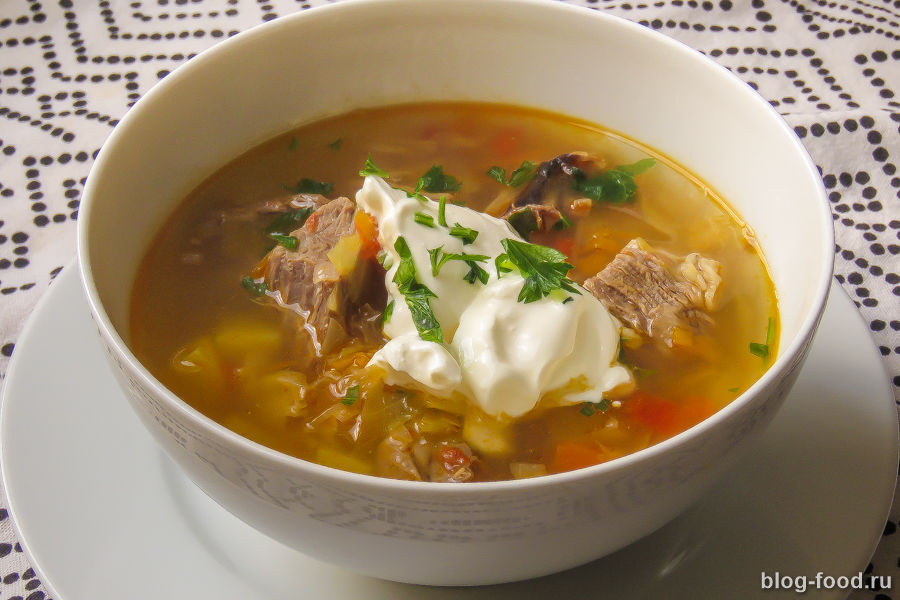
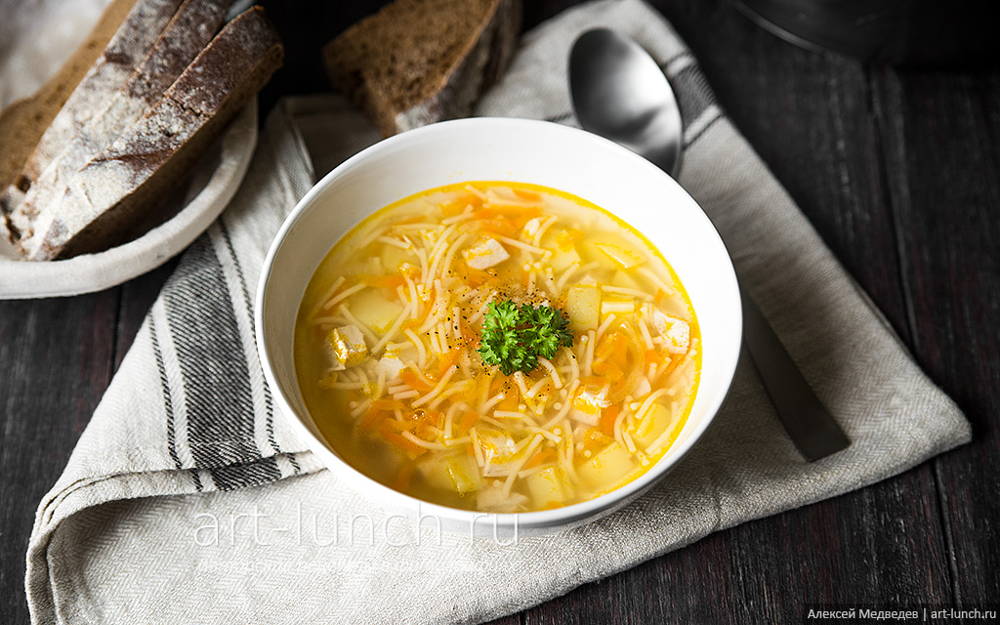

Щи
Приготовим на обед настоящие щи «по-русски».
Борщ

Знаменитый красный борщ любят за особенный аромат, удивительный вкус и насыщенный цвет. Идеальное сочетание овощей придают красному борщу тот индивидуальный вкус, благодаря которому он входит в список самых известных супов мира. Борщ подают в дорогих ресторанах и готовят дома. Всякий раз, когда есть возможность попробовать борщ, мы выбираем именно его.
Куриный
Очень сытный, нежный и ароматный куриный суп, не требующий много времени для приготовления. Рецепт супа с плавленым сыром очень прост, но замечательный вкус супчика оценят даже злостные «нелюбители» первых блюд. Отличный вариант для ужина всей семьей.